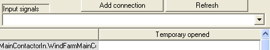
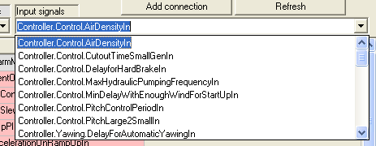

You can edit connections very easily using the "Signals & Connections editor".
To delete a existing connection just click on it and press "Delete". The program will ask for confirmation.
To add a connection follow the following steps:
1.Go to the "Input signals" combo-box of the "Internal Connections" tab.

2.Select the input signal you want to connect.

3.Go to the "Output Signals" combo-box of the same "Internal connections" tab. This combobox will present only signals that are compatible (analog or digital) with the selected input signal.
4.Press the "Add connection" button.
Note that a output signal may be connected to more than one input signal.